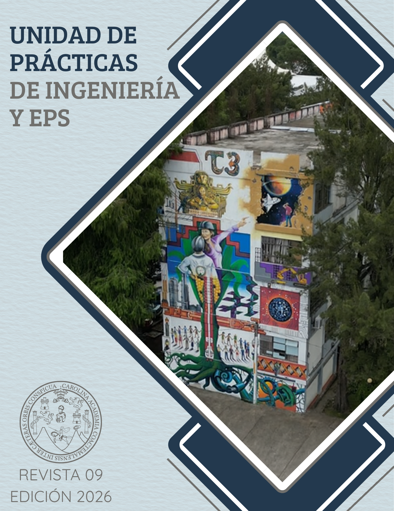

Portada
Editorial
Nómina de Junta Directiva
Directorio
Comité Editorial
Experiencia aérea
1
Soluciones tecnológicas para comunidades vulnerables de Centroamérica
1.1
Resumen
1.2
Abstract
1.3
Palabras claves
1.4
Introducción
1.5
Artículo
1.6
Resultados
1.7
Conclusiones
1.8
Recomendaciones
1.9
Referencias
2
Iniciativas de apoyo y bienestar docente en la Facultad de Ingeniería de la Universidad de San Carlos de Guatemala
2.1
Resumen
2.2
Abstract
2.3
Palabras claves
2.4
Introducción
2.5
Artículo
2.6
Conclusiones
2.7
Recomendaciones
2.8
Referencias
3
La tutela internacional de los derechos laborales de los trabajadores públicos
3.1
Resumen
3.2
Abstract
3.3
Palabras claves
3.4
Introducción
3.5
Artículo
3.6
Conclusión y recomendaciones
3.7
Referencias
4
Mejora del rendimiento en el uso de sistemas informáticos por medio de la capacitación
4.1
Desarrollo del estudio
4.2
Conclusiones
4.3
Recomendaciones
4.4
Referencias
5
Metrología de tiempo y frecuencia y sistema de posicionamiento global
5.1
Introducción
5.2
Artículo
5.3
Recomendaciones
5.4
Referencias
6
Metrología química: La ciencia que garantiza la exactitud en la ingeniería química
6.1
Introducción
6.2
Artículo
6.3
Conclusión
6.4
Referencias
7
Plataformas de gobernanza de IA
7.1
Resumen
7.2
Abstract
7.3
Palabras clave
7.4
Introducción
7.5
Artículo
7.6
Conclusiones
7.7
Referencias
8
Criptografía postcuántica
8.1
Resumen
8.2
Abstract
8.3
Palabras clave
8.4
Introducción
8.5
Artículo
8.6
Conclusiones
8.7
Referencias
9
Diagnóstico actual del Parque Ecológico Las Ardillas mediante jornada limpieza, identificación de flora y análisis del suelo
9.1
Resumen
9.2
Abstract
9.3
Palabras clave
9.4
Introducción
9.5
Artículo
9.6
Conclusiones
9.7
Recomendaciones
9.8
Referencias
10
Robots polifuncionales: evolución, tecnologías habilitadoras, aplicaciones industriales y tendencias futuras en la robótica
10.1
Resumen
10.2
Abstract
10.3
Palabras clave
10.4
Introducción
10.5
Artículo
10.6
Conclusiones
10.7
Referencias
Contraportada
Revista digital de la unidad de prácticas de ingeniería y EPS
